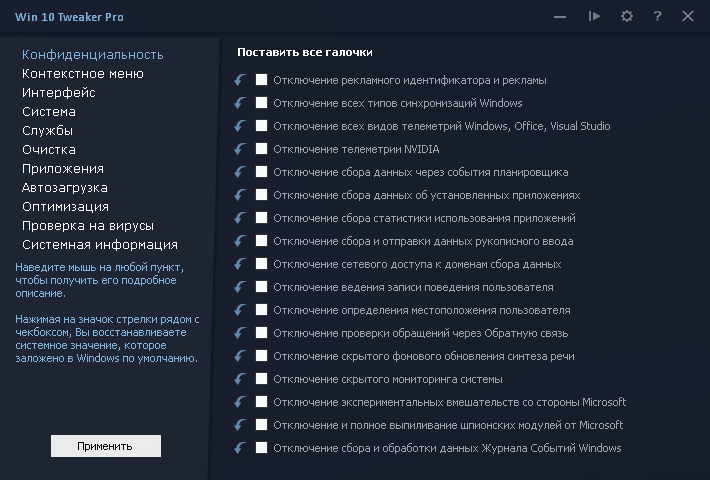

Средства тонкой настройки системы
Инструменты
Windows Tweaker
Это небольшая по размерам, но очень мощная по возможностям программа, позволяющая сделать полную оптимизацию Windows всего в несколько кликов.
MSI Afterburner
MSI Afterburner – самая популярная утилита для настройки видеокарт Предоставляет удобный доступ ко всем настройкам графической подсистемы компьютера
CCleaner
CCleaner — это передовое средство для оптимизации производительности, ускорения работы ПК и безопасной работы в Интернете
